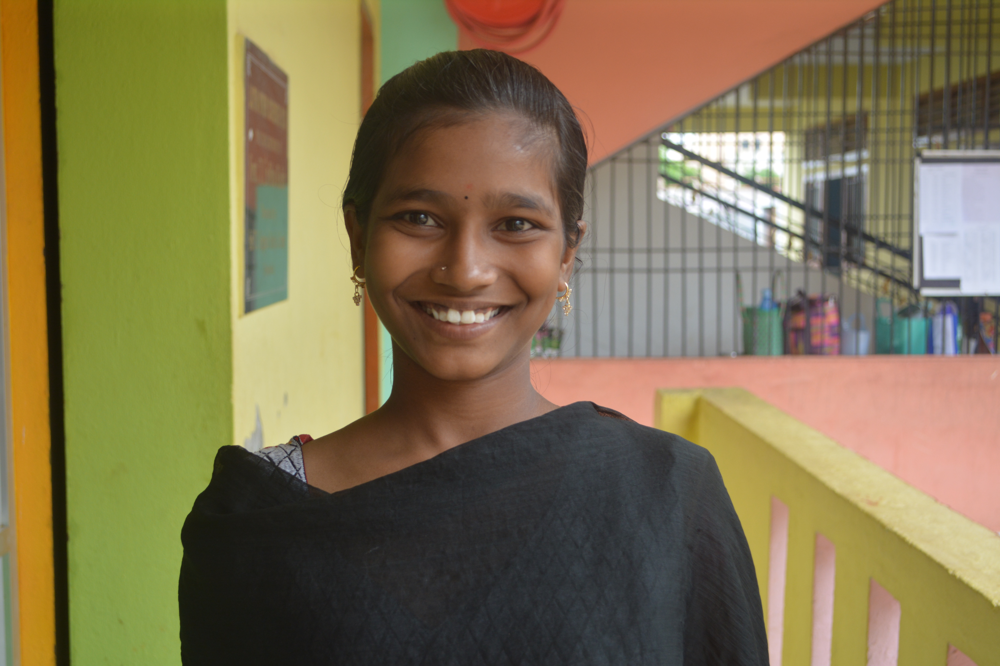

“I have run away from Aarti Home multiple times. Definitely more than thrice. But I have come back on my own every single time.
I don’t remember a lot from my old life, just that I laughed a lot. I felt so loved: I had both my parents and my siblings and we lived in a beautiful home. We were so happy.
My mother struggled with serious depression and didn’t have the intelligence or the strength to manage any property or money that my father left behind. She stopped going to work and at one point, we had no money coming into the house. Our community deserted us when we needed them the most and very soon, after selling our house, we were out on the streets. It all happened so fast; one day I’m laughing with my family and the next I’m struggling to find a grain of food.
Thankfully, our case did not go unnoticed. I was brought to Aarti Home by some kind people who saw us on the street regularly. They believed that education for me was very important.
I have tried to run away from Aarti Home because sometimes I wish I could change what happened to my family but Sandhyamma and all my teachers and friends at Aarti Home have shown me so much love and support that I come back every time. I don’t run away anymore because I have found a new support system. I’m going to make enough money to support my mother and siblings so that they don’t have to suffer any longer.”